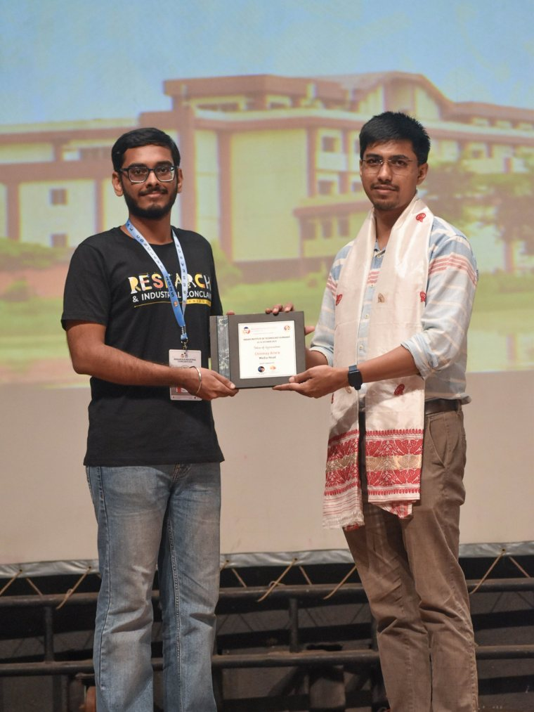
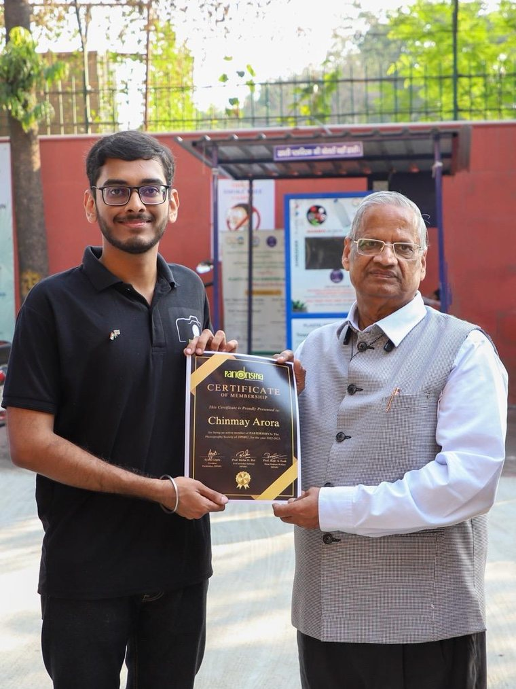

Design & media
Posters, campaigns, identities and the events behind them.
Alongside the research I have spent six years designing for university societies, a national research conclave and a pharmacy brand, and photographing the events I helped run. It is where I learned to make a dense idea legible in one frame — which turns out to be the same job as a good figure.

Research & Industrial Conclave 2025, IIT Guwahati
As Content & Media Head I planned and produced the content for every channel of the conclave, from speaker announcements and event posters to the call for abstracts, and coordinated media coverage across the three days.



Jyoti and Bhupat Mehta School of Health Sciences and Technology, IIT Guwahati
Two years on the school's social media team: talk announcements, conference branding, internship and admissions notices, trip guides and merchandise.


Paridrishya and the Rotaract Club, DPSRU
As Vice-President of Paridrishya, the photography society, and Media & Publicity Chair of the Rotaract Club, I built the visual identity for both: campaign posters, awareness days, ceremony invitations and society merchandise.


Singh Pharmacy — freelance brand and campaign design
Brand identity and a run of campaign assets for an independent pharmacy and its IV vitamin wellness clinic: logo, service menus, product explainers and customer notices, built to work across print and social.


Photography
Event and campus photography with Paridrishya, and light-painting experiments made with long exposures and a torch.


